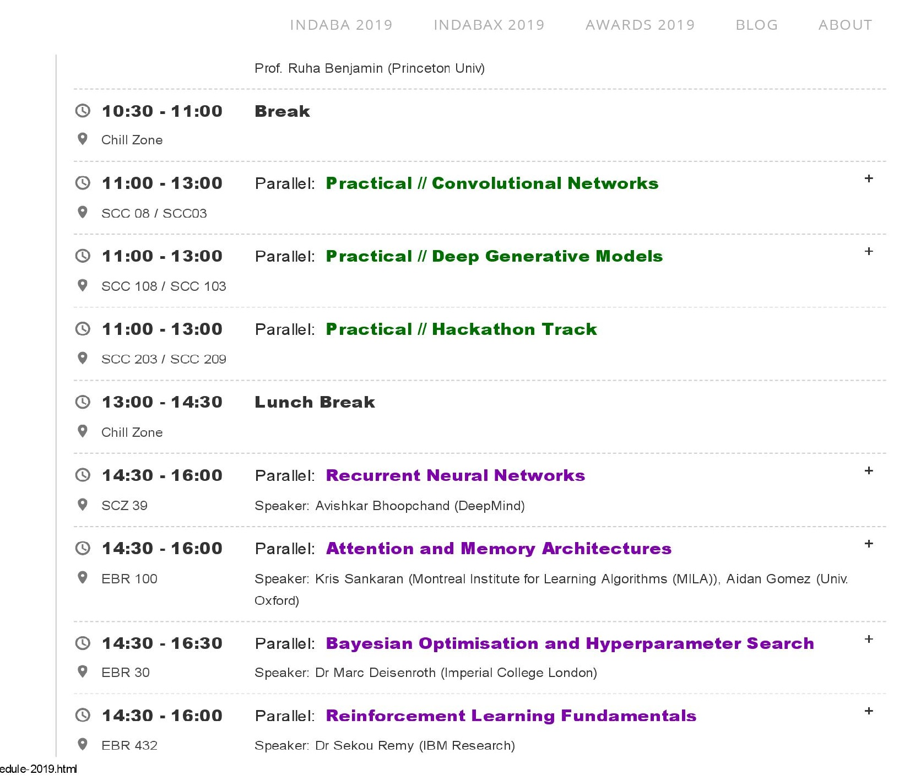
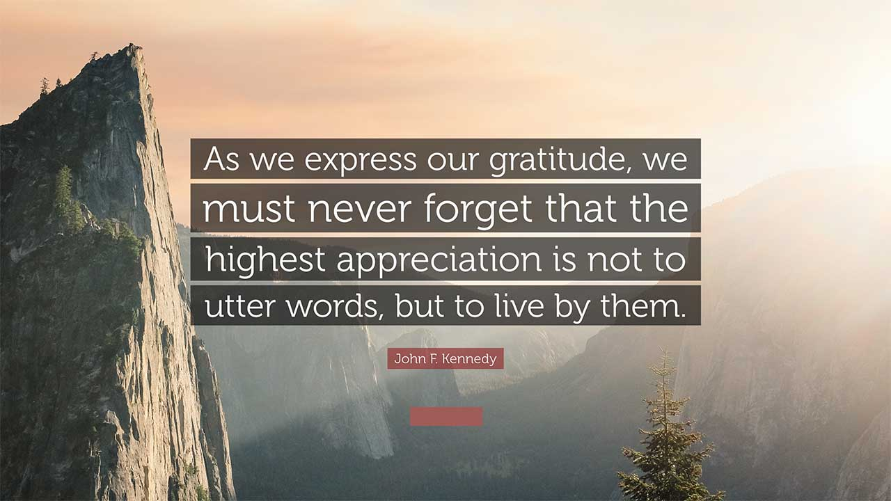

Acceptance
details comming

Details comming
First Trip Outside Africa
- Flight was long. Uber driver was great; he told me he had three times twins :)
- The roads are clean and smooth
- The Beautiful campus of Kenyatta University and the weather
More than 500 ML researchers from all parts of the continent had gathered. Arrived at Nyayo Hostels and immediately was welcomed by african researchers who have been to previous Indaba editions. They were startled when I told them I come from India, and some of them had studied in India. As of now, my university has 56+ Ethiopian students learning different subfields of computer science. I was very nervous about what contribution I'm going to make, and before coming, I had a list prepared on how I would make the most out of the Indaba. I wrote down things like Printing Visiting cards( which I handed off to interested researchers who liked my poster and were willing to collab), Questions for Dr.Fei Fei Lee, and Andrew Ng. Watching 2-minute papers and reading backprop paper and thinking of ideas to pitch to future collaborators. Networking and internship opportunities. All sorts of things.
Parallels & Practicals
There are so many things going on inside the Indaba that even if you're there, you're overwhelmed with options on what to attend :) You want to attend them all. Take a look at the schedule and you'll know!
Practicals were hands-on sessions on Deep Neural Networks, Generative Models, RNN, Reinforcement Learning, etc. I looked forward to it every day. The volunteers helped in every way, they explained the math behind it so clearly, and the practicals are very well organized. There were optional sections in the google colab and also questions that make you think with your peers. The great part is that the volunteers want to improve it to another level and make it more simpler, nothing could be more simpler.. unless we add math visualizations like 3blue1brown :)
The talks all of them are in-depth, and one thing I knew for sure is I suck at maths for now. I was studying about GANs and my poster was also about GANs(Story GANs), and I got to know the problems with it only in the parallel session on generative models by Adji Bousso Dieng.
Writing a research proposal: A very productive session with lots of insights and practical points from George Konidaris and Daniela Massiceti. I wrote my S.O.P finally very short(2 and 1/2page) and got immediate feedback, and the slides are a gem. They are my go-to for writing S.O.P for my masters.
Half of the book that I took notes in are full of ideas and concepts like scsampler, randwire,etc and understood divergence and regularization more confidently. Learnt about Clevr Dataset and it's applications. Awesome fun and thinking happened during the reinforcement and generative models practicals.
Dr.Manohar Paluri and Dr. Natalia Neverova's talk introduced me to the SOTA work that FAIR has been doing, and they are at the top in Computer Vision. Dr. Manohar is a tremendous visionary, and in one of the panel discussions, he told us about how he comes to a solution to a problem, and his process is fantastic to learn and apply.
Keynotes & Poster Sessions
- Presented my First Poster ever

My first poster and I was so nervous, So many researchers gave me their inputs, and some were interested to look deeply into the papers and it's applications and would contact me for collaboration, and I'm in touch with some of them. Thanks to my friend Ismail for taking pictures of most of the posters and compiling it. While I was presenting the poster, I also wanted to see other's work, so now and then I went to their posters when no one was around. Link to the posters - Posters
Keynotes: Keynotes were given by some prominent people in the research community, including Richard Socher, Abdoulaye Baniro Diallo, Aisha Walcott, and so many more. Ruha Benjamin's powerful talk on technology and race still has everyone thinking, and her books on race-ethnicity have had a global impact. Everyone knows the famous Imagenet Dataset, which has transformed AI research, and Dr.Fei Fei Li told us the whole history behind how it came into existence and from wordnet to where we are right now. We realized the importance of datasets is as much as the importance of algorithms.
Sauti Yetu(Our Voice)
This year we say Sauti Yetu/Our Voice. Our voice can be strong; our voice can create change; we have many different voices that must be heard. We hope that you will use the Indaba as part of your voice. As the Indaba starts and then ends for this third year, we ask that all of us, together, raise our voice, to be more confident, to take more ownership, and to continue working towards the responsible technology that will help us build the next age of pan-African prosperity.
Life after Indaba:
I'm doing the #30daysofMLcode the 2nd time, and I'm almost close to reading Marc sir's book Maths for ML. Also, reading weekly research papers and following Twiml's webinars and focusing on my startup. The swags and free TPU's are always worth to mention. They are put to good use. A part of me understood how little I knew of what I already knew was little. I realized where I need to put my focus on and which subfield suits best for me. Deep learning Indaba has helped me to know a lot of things deeply; I have come to realize my true potential and where my purpose lies, which frankly I had no idea before. And I have figured out - I am going to pursue further studies, and I'm going to do community events and give talks once I have little knowledge
Closing Gratitude
 I have missed out on a lot of important sessions like the Hackathon track and the sessions which I haven't attended but watching the videos now that they are on Youtube.
Big Thank you to Ayodele Olabiyi - he was sitting just left to me when he was called on the stage to receive his award. Your emotions shook me - gave me goosebumps. He was like will smith from the pursuit of happyness. All of us who saw you saw your passion and hard work, and that inspires us.
Thank you with all my heart to all the Indaba organizers, sponsors, speakers, volunteers, and the
participants for
giving your best to this amazing and enriching community.
Indaba Forever x
Not to forget the amazing memories apart from academics - networking sessions every time, the
after-party, and the
welcoming party and people who went to have the best burger in Kenya, the wine when it rained. All
these made it more
splendid and beautiful.
Indaba is more than a conference; it is about the future and how we collectively can improve it and
also does so by
giving opportunities to so many researchers.
Thank you ✌